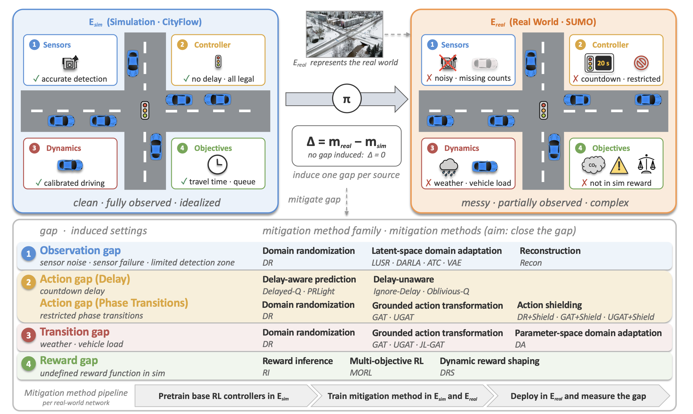

Reinforcement learning achieves strong traffic signal control performance in simulation, yet policies trained in simulators often fail once deployed in the real world. Sim2Signal is a benchmark for measuring that Sim-to-Real gap and for testing the methods meant to close it.
Sim2Signal decomposes the Sim-to-Real gap into four sources — the observation, action, transition, and reward gaps — matching the four components of the underlying MDP. Each gap is then induced in isolation under a shared protocol, so the effect of one gap source, and of any method that targets it, can be read off directly.

The Sim-to-Real gap is split along the MDP tuple: observation (sensor noise, failures, detection-zone limits), action (execution delay and restricted phase transitions), transition (traffic and vehicle dynamics), and reward (objectives the simulator cannot compute).
Every gap is induced on its own, under one shared protocol, with no gap induced as the reference point. This isolates what each source actually costs instead of reporting a single blended number.
Ten calibrated networks built from five real-world locations, spanning single intersections through multi-intersection corridors, so results are not tied to one toy grid.
Policies train in a low-fidelity simulator (CityFlow) and transfer to a high-fidelity one (SUMO) that plays the role of the real world. The "real" side stays fully controllable, so gaps can be induced and measured exactly.
Eighteen mitigation methods on two base RL controllers, covering domain randomization, domain adaptation, grounded action transformation, delay-aware prediction, action shielding, and reward-side approaches.
The full pipeline is released: pretrain the base controller in simulation, train the mitigation method, deploy into the "real" environment, and measure the gap. Configs and scripts included.
Download the benchmark and run the pipeline on your own network.
The paper is currently under review; a link will be posted here once it is public.